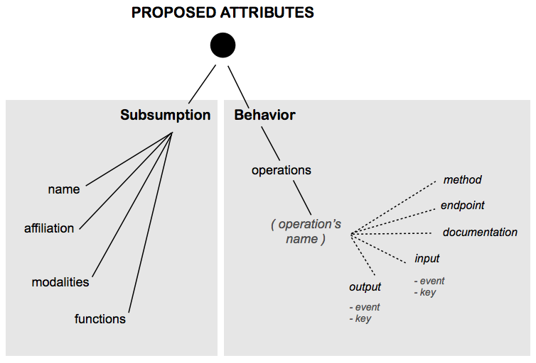
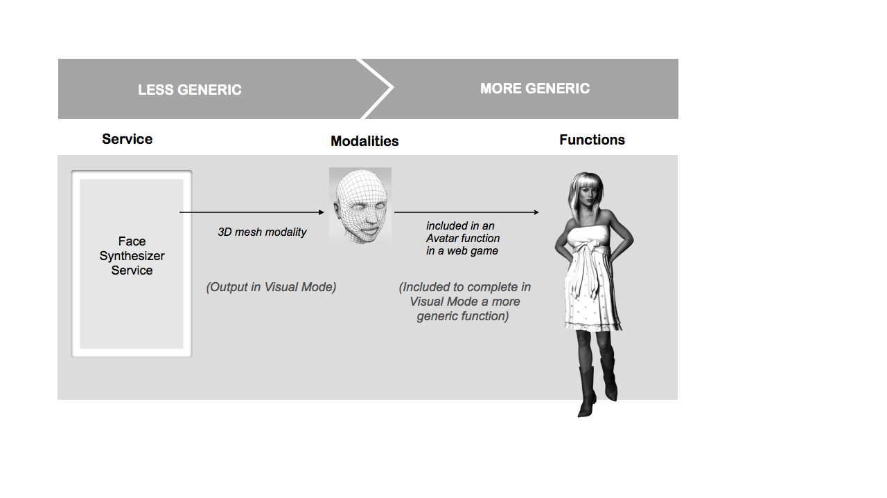

This proposal is designed to support the annotation of Modality Components, to allow their discovery and registering in a multimodal system. The focus is the dynamic discovery of Modality Component as services using generic information about the underlying properties and types of processes. This information is provided by an announcement and a description (a capabilities manifest, for example) advertised in some network. In this document we will illustrate this point with an example of a multimodal greeting service in a smart environment.
The Modality Components can be described with a document that evolves on complexity depending on the application needs. This description can be limited to indications about the Input and Output interfaces or be more detailed describing functional and non-functional properties, inspired by some of the Extensible Multimodal Annotation Markup Language (EMMA) properties [W3C-EMMA 2009] like emma:function, emma:media-type, emma:medium and emma:mode.
The meaning of the terms for a controlled vocabulary in the form of a Glossary for the annotation of Modality Components, is divided in two parts (Figure 2): Subsumption terms and behavior terms.
Figure 1: Basic Vocabulary for MC annotation
Subsumption concerns the attributes classifiying the Modality Components. It is structured with metadata classifying the Modality Component according to its membership or association with a Multimodal class in conformance to the modes handled by the System. This first description allows discovery filtering for a precise target mode. There are four properties:
Based on this term, the Modality Component's capabilities can be classified from a high level perspective, for example, we can infer that the first component is part of the device class "TEXT_DISPLAYS", and the second to the class "MEDIA_CONTROLLERS". The triplet is inspired by the intentional name schema [ADJIE-1999] and show hierarchical tree relationships between general concepts (including some negative differentiating aspects). These names are intentional; they describe the intent of the Modaity Component and its implementation in the form of a tuple of attributes.
The functions are the technical entities supporting a limited number of modalities according to the semantics of the message and the capabilities of the support itself. A Modality Component acts as a complex set of functions. Each function uses one or more modalities that realizes some mode. For example, in Figure 2 the Avatar uses a 3D mesh modality through a visual mode. The functions term defines a list of functions using in the service, ordered by importance and by mode. For example, a gesture recognizer service uses the sign language function, using the single hand gesture modality that is executed in the haptic mode and is perceived in the visual mode.
Finally, the operations is the IOPE list of the Modality Component Capabilities. IOPE means Inputs, Outputs, Preconditions and Effects of a service[YU-2007] [OWL-S]
In Figure 2 the "Face Synthesizer Service" acts in some mode that is perceived by a final user through a modality that is part of some functions, i.e. a face synthesis service acts in the visual mode that is perceived through a 3D mesh modality that is part of an avatar function.

Figure 2: Mode, Modalities, Functions
Thus, for the "Face Syntesizer" service illustrated in Figure 2 the Modality Component's description (description.js document) shows an operation description. It could be a list of other expressions but we propose the smile operation as an example:
{
"name": "VRML_FACE_SYNTHESIZER",
"affiliation": "ANIMATED_3D_RENDERER",
"version": "1.0",
"endpoints": {
"1.0" : { "description":"http://localhost:5000/vrml_face_synthesizer/1-0/description.js",
"uri": "http://localhost:5000/vrml_face_synthesizer/1-0/" } },
"modalities":{
"visual":["REALTIME_SINTHESIZER"] }
},
"functions":{
"visual":["VR_GRAPHICS"]
},
"operations": {
"smile": {
"method":"POST",
"endpoint":"http://localhost:5000/vrml_face_synthesizer/1-0",
"documentation": "Operation to change the expression to a smiling face. ",
"metadata": {"emotion":"emotionML_uri","behavior":"behaviorML_uri"},
"input": {
"key": {
"position": 1,
"metadata": { "Content-Type":{ "cognitive":["text/plain"] } },
"documentation": "The user key to acces this API"
},
"event": {
"position": 0,
"metadata": { "Content-Type":{ "cognitive":["ExtensionNotification","StartRequest"] } },
"documentation": "If the event type is extension, the service returns just true or fail
(for a steady smile, for example). If the event type is start request
(for a time-controlled smile), the service can receive the starting
time and returns the acceleration info."
"data": {
"metadata": { "Content-Type":{ "cognitive":["data/integer","data/time"] } },
"documentation": "If the event's data is a notification, the event will include
the easing integer value for the acceleration. If the event is a StartRequest
the event can also include the start time in milliseconds for
the smile process."
}
}
},
"output": {
"event": {
"position": 0,
"metadata": { "Content-Type":{ "cognitive":["StartResponse"] } },
"documentation": "The type of response event.",
"data": {
"metadata": { "Content-Type":{ "cognitive":["data/integer" } },
"documentation": "In the case of a startRequest, a confirmation of the
starting time of the animation." }
}
},
"preconditions": {"documentation": "No precondition is needed other
than the loading of the face visual data."},
"effects": {"documentation": "Asynchronous modality. It will not block the rest
of the application rendering."}
}
}
}
Code 1: MC Annotation example
This description can be parsed before the execution of the service, in a discovery process. To call the service and to execute a smile operation, le service query with a POST method must be structures as follows:
POST /vrml_face_synthesizer/1-0 HTTP/1.1
Host: localhost:5000
Content-Type: text/xml
<?xml version="1.0"?> <smile>
<input>
<event>
<mmi xmlns="http://www.w3.org/2008/04/mmi-arch" version="1.0">
<mmi:startRequest source="IM_1" target="smile" context="c_1" requestID="r_1">
<mmi:data>
<ease value="0.5"/>
<starting_time value="300"/>
</mmi:data>
</mmi:startRequest>
</mmi:mmi>
</event>
</input> </smile>
Code 2: Post request to the multimodal service
The smile tag represents the operation that has been requested, the input tag express that this is a request, the event tag contains the MMI Lifecycle event to control the operation. There can be multiple MMI events inside the input and output elements to support concurrential or parallel commands to the interface. The MMI Lifecycle event sent to the operation provided by the Modality Component can be any of the events defined to handle inputs on the MMI specification.
The POST response of the service will be:
<?xml version="1.0"?> <smile>
<output> <event>
<mmi xmlns="http://www.w3.org/2008/04/mmi-arch" version="1.0"> <mmi:startResponse source="smile" target="IM_1" context="c_1" requestID="r_1" status="success" /> </mmi:mmi>
</event>
</output> </smile>
Code 3: Post response from the multimodal service
The possible GET request to the REST endpoint for the same service could be:
GET /vrml_face_synthesizer/1-0 HTTP/1.1
Host: localhost:5000 /IM_1/c_1/event/startRequest/r_1/smile?data[ease]=0.5&data[starting_time]=300
Code 4: Possible REST request for the multimodal service following the MMI architecture semantics
The possible Json response to the REST request:
{ "output": {
"event": [{
"mmi": "startResponse",
"context": "c_1",
"source": "smile",
"target": "IM_1",
"requestID": "r_1",
"status": "success",
"data": {}
}]
}
}
Code 5: Possible REST request for the multimodal service following the MMI architecture semantics